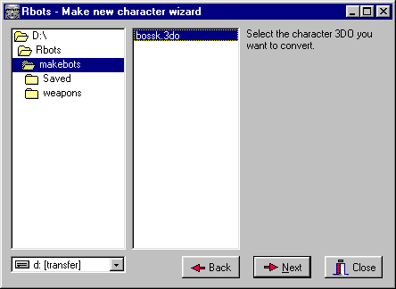
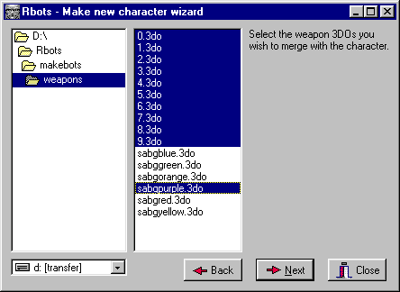
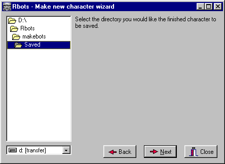

Rbots Tutorial - Part Two
Creating new bots
Last updated 1st July 2001
Author - Raynar
Welcome to part two of the Rbots tutorial. This tutorial will cover how to create new bot characters. Make sure you have read through and understand part one before attempting the techiniques described here. These tutorials cover both the Jedi Knight & Mysteries of the Sith versions of Rbots. As Rbots itself is still under alpha development, it is constantly evolving. This tutorial will also evolve to accomodate any changes.
In order to use this tutorial, you must have some basic editing experience. There are other tutorials available to help you understand the basics.
Before we start, make sure you have a project directory set up with Rbots already installed as described in part one of the tutorial.
First of all, find the multiplayer model you want to use as a bot character. You can use any multiplayer model at all, whether they are included with JK itself or supplied from elsewhere.
To use the models that come with JK, use Conman or Cage to extract the file 'models.dat' from 'res2.gob'. This file lists each of the available mulitplayer characters, with it's filename and sound files. Write down the details of each character you want to use.
Jedi Knight
The Rbots JK version requires separate models of every character holding every weapon. To create new characters involves manually copying and pasting the actual 3do text files, both the character and weapon, while making other changes to the 3do files, to make a finished model ready to Rbots. This needs to be done 11 times (one for each weapon) for each character! As you can imagine this is quite a time consuming process, and was the main reason why only three bots were included in the earlier releases.
To make this process less painful, there is now a new wizard utility available, to do the work for you. Here's how to use it:
If you want to use one of the models that come with JK, extract the filename that you found in 'models.dat' from 'res2.gob'. Feel free to rename the file to whatever you like and copy the file to a convenient directory.
Open up the wizard utility & click 'Next'.
|  |
Select the model you want to convert, and click 'Next'. We'll use the 'bossk' multiplayer model for this example. |
|  |
Multiselect all the weapons you want to use with the new character, and click 'Next'. This example will use all the normal weapons and the purple saber. |
|  |
Select where you would like all the new files to be saved, and click 'Next'. |
The wizard will then create the new models ready for you to use. Now copy the new files to the 3DO directory in your project.
Mysteries of the Sith
The Rbots MotS version can use exisiting multiplayer models directly and has none of the restrictions above. Just copy the model to the 3DO directory in your project.
Both JK & MotS
We now need to create a template for our new character model. Open up the 'master.tpl' or 'mots.tpl' file in a text editor. Copy and paste the last three lines.
# DESC: Rbot Yellow Kyle
# BBOX: -.031992 -.017003 -.134424 .032032 .024487 .073659
rbot_kylegold _humanactor model3d=yel-2.3do size=0.060400 movesize=0.060400 puppet=ky.pup soundclass=kyMP1.snd mass=....
Modify the new info to suit your new character. There are only four items you will need to change: description, template name, model3d & soundclass. Use the sound file that we found earlier in 'models.dat'. If the new model doesn't have a new sound file, just use the default 'ky.snd'.
# DESC: Rbot Bossk
# BBOX: -.031992 -.017003 -.134424 .032032 .024487 .073659
rbot_bossk _humanactor model3d=bossk-2.3do size=0.060400 movesize=0.060400 puppet=ky.pup soundclass=kybossk.snd mass=....
Jedi Knight
You will need to set 'model3d' to one of the new character model filenames - any one of them will do.
Mysteries of the Sith
Set 'model3d' to the actual filename of the new character model.
Both JK & MotS
All we need to do now is to give our new bot a name. Open up the 'cogstrings.uni' file from the 'misc' directory in a text editor. At the top of the file you will see something like this:
MSGS 80
Add 1 to the msgs count, so that it should read:
MSGS 81
Look further down the file until you find the last line before 'COG_02000'. Copy and paste the previous line.
"COG_01045" 0 "Hellcat"
Add 1 to the cog string number and modify the name to whatever you like. Once finished it should look something like this:
"COG_01046" 0 "Super Bot"
Finished! You are now ready to use your new bot character with the Rbots SDK. You can review how to add bots to your level, in part one of the tutorial. Enjoy!